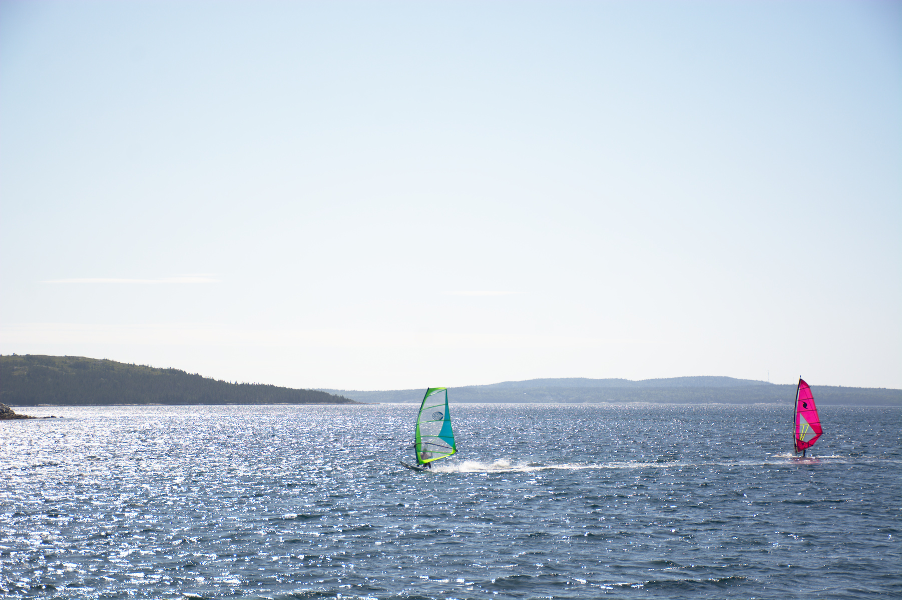

-
Pigeon Mountain
I was so impressed with this beautiful hike! Pigeon mountain is not too strenuous but still long and high enough to be a good workout. The views are amazing - both along the way and at the summit. The trail is just a straightforward stroll to the top and back down and the trailhead is only an hour away from Calgary. Date: 2020-07-05 Location: Kananaskis Friends: Ingrid, Kat The hike begins along a transmission line right-of-way for the first 5 kilometres.
-
Cox Hill via North Jumpingpound Ridge
The hike We hiked this one-way from the north end of Jumpingpound Ridge to Cox Hill and down to the Dawson equestrian area. The rest of the family biked a big loop from the parking lot. The hike was a gentle hike up and down but I heard it was pretty strenuous to mountain bike. The wildflowers were still out in full bloom and my favourite part of the hike was the open meadow between Jumpingpound Ridge and Cox Hill.
-
Little Lougheed
Another short and fun hike with a great view of Spray Lake. I’ve never seen so many people parked on the side of the road on the Smith-Dorrien - everyone seems to be itching to get out these days. The hike was busy but there was plenty of space for groups to pass each other. Date: 2020-06-20 Location: Kananaskis Friends: Kat The lower third of the hiking trail goes through pleasant green forest.
-
King Creek Ridge
King Creek Ridge has an excellent effort-to-reward ratio, as can be seen from the photos. How lucky are Calgarians to see these views in the morning and still be home in time for lunch? The hike is very similar to Prairie Mountain in terms of length and elevation gain, but the views are out of the world for the amount of time you spend climbing. We ascended and descended via two different of well-worn trails.
-
Jumpingpound Summit
The shortest hike I’ve done in years and it still kicked my ass! It’s rough coming out of quarantine mode. Date: 2020-06-06 Location: Kananaskis Friends: Katrin, Chris
-
Prairie Mountain II
One of the best feelings in the world is reaching a summit when you haven’t been outside in a while. The weather was nice and the rain at the trailhead turned into magical fluffy snowflakes a third of the way up. At the summit, any views were obstructed by fog. With the oppressive gloom pressing down around us, and the persistent drone of an airplane somewhere above, our time on the summit felt unsettling and eerie and somewhat post-apocalyptic.
-
Tacky
Date: 2019-12-23 Location: Panorama Mountain Resort Friends: Chris, Kat, Pat, Julian, Greg, Joel, Robyn, Alex
-
Mount St. Piran
This was my attempt to squeeze in one last hike before the hiking season “officially” ended. There had been a lot of snowfall in parts of Kananaskis but barely any in Lake Louise. Asking around resulted in various conflicting reports of avalanche and winter conditions. We decided to head out to the Lake Louise area and check the conditions out for ourselves. There was probably a foot of snow at higher elevations, but everything was otherwise very hikeable.
-
Nova Scotia
Summer 2019 - I visited the east coast of Canada for the first time. Developed some major wetsuit tan lines. Also tried sailing, kayaking, canoeing, boogie boarding, and windsurfing for the first time. Collected lots of periwinkle shells. Watched the tides rise and fall every day. Ate a whole lobster. Dates: 2019-08-10 to 2019-09-02
-
Skyline Trail
Skyline was probably the hike that first led me to backpacking. I discovered it two years ago in 2016⁄17 and since then, was obsessed with the thought of hiking it. Now that I’ve actually done it, it feels strange! The weather was good, the views were great, the company was awesome, I packed my gear really well (light), the only thing that wassn’t good were my knees. Date: 2019-08-03 to 2019-08-05


